NIHAO XVII: تنوع حركيات المجرات القزمة وآثاره في دالة سرعة Hi
الملخص
نستخدم 85 زوجاً من المحاكاة الكونية عالية الدقة ضمن نموذج LCDM من مشروع NIHAO لدراسة سبب ميل عروض خطوط الهيدروجين المتعادل (HI) في المجرات القزمة، المقاسة عند 50% من فيض الذروة (من المحاكاة الهيدروديناميكية)، إلى إعطاء تقديرات أدنى من السرعة الدائرية العظمى (من المحاكاة المقابلة المحتوية على المادة المظلمة فقط). وتسهم عمليتان رئيسيتان في ذلك. 1) تكون المجرات الأقل كتلة أقل دعماً بالدوران. ويؤكد ذلك رصدياً الالتواء في توزيعات عروض الخطوط ضمن صناديق كتلة HI في رصدي ALFALFA وHIPASS كليهما. 2) تكون توزيعات HI أقل امتداداً (بالنسبة إلى هالة المادة المظلمة) في المجرات القزمة. وبالاقتران مع انخفاض نسبة الباريونات إلى الهالة، ينتج ذلك منحنيات دوران لا تزال صاعدة عند آخر نقطة بيانات مقيسة، بما يتفق مع أرصاد SPARC. وبجمع هذين الأثرين، تمتلك المجرات الأقل كتلة، في المحاكاة والأرصاد على حد سواء، قيماً أصغر وسطياً لـ . وإضافة إلى ذلك، فإن فقدان الكتلة المدفوع بالمستعرات العظمى وآثار الإسقاط (إذ إن المجرات القزمة ليست عموماً أقراصاً رقيقة) يخفضان عروض الخطوط بدرجة إضافية. إن دالة سرعة عروض خطوط HI المستنتجة من NIHAO تتفق جيداً مع أرصاد المجرات القزمة في الكون القريب: . وينخفض ميل حالة المادة المظلمة فقط البالغ إلى في المحاكاة الهيدروديناميكية. وستتيح الأرصاد الراديوية المستقبلية لعينات غير متحيزة وبدقة مكانية أعلى اختبارات أشد صرامة للمحاكاة، ومن ثم لنموذج LCDM.
keywords:
علم الكونيات: النظرية – المادة المظلمة – المجرات: التكوّن – المجرات: الحركيات والديناميكيات – المجرات: البنية – الطرائق: عددية1 المقدمة
يحقق نموذج لامبدا للمادة المظلمة الباردة (LCDM) نجاحاً كبيراً في إعادة إنتاج بنية الكون واسعة النطاق (Springel et al., 2005) والتباينات في الخلفية الكونية الميكروية (Planck Collaboration et al., 2014). ففي كون LCDM يوجد عدد أكبر من البنى منخفضة الكتلة مقارنة بالبنى الأعلى كتلة؛ وبعبارة أخرى توجد دالة كتلة هالات شديدة الانحدار نحو القيم الصغيرة أو دالة سرعات للهالات (Klypin et al., 2015). ويبدو هذا التنبؤ، بصورة ساذجة، متعارضاً مع البيانات الرصدية حول المجرات، أي وفرة التوابع (Klypin et al., 1999; Moore et al., 1999). ولهذه المسألة، المعروفة بمشكلة “التوابع المفقودة”، حل باريوني طبيعي: إذ يصبح تكوّن المجرات أقل كفاءة باطراد في هالات المادة المظلمة منخفضة الكتلة بسبب الخلفية المؤينة، وانفجارات المستعرات العظمى (SN)، وإزالة الغاز بفعل ضغط الاندفاع (Bullock et al., 2000; Benson et al., 2002; Kravtsov et al., 2004; Macciò et al., 2010). وقد أصبحت أحدث المحاكاة الكونية الهيدروديناميكية للمجموعة المحلية متسقة الآن مع دوال الكتلة النجمية والسرعة المرصودة للتوابع (مثلاً، Sawala et al., 2016; Buck et al., 2018).
قيسَت دالة سرعات المجرات باستخدام عروض خطوط HI في الكون القريب (ضمن Mpc) من مسحي HIPASS (Zwaan et al., 2010) وALFALFA (Papastergis et al., 2011)، وداخل الحجم المحلي (ضمن Mpc) بواسطة Klypin et al. (2015). وقد بيّن هؤلاء المؤلفون وغيرهم (Zavala et al., 2009; Trujillo-Gomez et al., 2011) أن LCDM يعطي تقديرات جيدة جداً لعدد المجرات ذات السرعات الدائرية عند نحو وما فوقها. ومع معالجة دقيقة لمختلف المنهجيات النظامية، بما في ذلك آثار انتقاء المسح، أظهر Obreschkow et al. (2013) توافقاً بين LCDM وصولاً إلى سرعات دائرية مقدارها . غير أن LCDM يبدو أنه يفشل بدرجة لافتة عند السرعات الدائرية الأدنى، إذ يبالغ في تقدير عدد المجرات القزمة بعامل عند مقياس سرعة ، وبعامل عند مقياس سرعة (Klypin et al., 2015). والمجرات عند هذه المقاييس السرعية غير حساسة عملياً للخلفية المؤينة، وبما أنها ليست توابع، فهي لا تتأثر بنضوب الغاز عبر ضغط الاندفاع أو بالتجريد النجمي. وهذا يجعل عدم التوافق بين دالة عروض الخطوط المرصودة ودالة سرعات الهالات تحدياً أشد جدية لنموذج LCDM. وعلاوة على ذلك، فإن تعديلات بسيطة على نموذج LCDM، مثل المادة المظلمة الدافئة، لا تستطيع حل هذه المسألة، لأن المرشحين ذوي جسيمات دافئة بما يكفي لخفض الكثافة العددية لهالات المادة المظلمة بدرجة ملحوظة ينتجون مقياساً مميزاً في دالة السرعات لا تدعمه الأرصاد (Klypin et al., 2015). ويعتمد تطبيع دالة السرعات على معاملات كونية رئيسية مثل سعة الاضطرابات البدائية () وكثافة المادة الكلية () (Schneider & Trujillo-Gomez, 2018). فعلى سبيل المثال، يبلغ الفرق بين كونيتي Planck (Planck Collaboration et al., 2014) وWMAP7 (Jarosik et al., 2011) عاملاً مقداره 1.43 في الكثافة العددية عند سرعة ثابتة (Klypin et al., 2015).
يتمثل حل هذا التباين في أن عروض خطوط HI في المجرات القزمة، المقاسة عند 50% من فيض الذروة، ، تعد مؤشراً ضعيفاً إلى السرعة الدائرية العظمى لهالة المادة المظلمة المضيفة (Brook & Di Cintio, 2015; Macciò et al., 2016; Brooks et al., 2017; Verbeke et al., 2017). ولا ينبغي أن يكون ذلك مفاجئاً، إذ من المعروف عموماً أن المجرات الأقل كتلة والأحدث عمراً أقل دعماً بالدوران من المجرات الأعلى كتلة والأقدم. ويظهر ذلك في الأرصاد (مثلاً، Kassin et al., 2012; Newman et al., 2013; Wisnioski et al., 2015) وفي محاكاة تكوّن المجرات الهيدروديناميكية (Ceverino et al., 2017; El-Badry et al., 2018). فضلاً عن ذلك، وكما نوقش في Courteau (1997)، فإن عروض خطوط Hi ، بخلاف منحنيات دوران Hi المحلولة مكانياً، لا تعاين بالضرورة الأقراص الخارجية بفعالية لأن كثافة سطح Hi تنخفض سريعاً وراء نصف القطر البصري.
في هذه الورقة ندرس بمزيد من التفصيل سبب الفرق بين و مستخدمين محاكاة تكوّن المجرات من مشروع NIHAO (Wang et al., 2015). وتشمل التفسيرات الممكنة التي نأخذها في الاعتبار: فقدان كتلة الغاز من الهالة، مما يؤدي إلى سرعة دائرية أدنى في المحاكاة الهيدروديناميكية منها في محاكاة المادة المظلمة فقط؛ وأن HI في المحاكاة ليس ممتداً بما يكفي، بحيث لا تبلغ سرعة الدوران العظمى السرعة الدائرية العظمى؛ والحركات غير الدائرية، التي تجعل منحنى الدوران يقلل من تقدير السرعة الدائرية؛ وآثار الإسقاط، الناتجة عن أن المجرات القزمة ليست أقراصاً رقيقة دوارة.
ترتيب الورقة كما يلي. يصف القسم 2 المحاكاة الكونية الهيدروديناميكية وتعريفات السرعة المختلفة التي نستخدمها. وفي القسم 3 نعرض التحويل من السرعة الدائرية العظمى إلى عرض خط HI. وفي القسم 4 نعرض دالة سرعة HI المستنتجة من محاكاتنا. وفي القسم 5 نناقش أسباب تقليل عروض الخطوط من تقدير سرعة الهالة العظمى، ونعرض اختبارات رصدية لهذه الآثار. ويقدَّم ملخص في القسم 6.
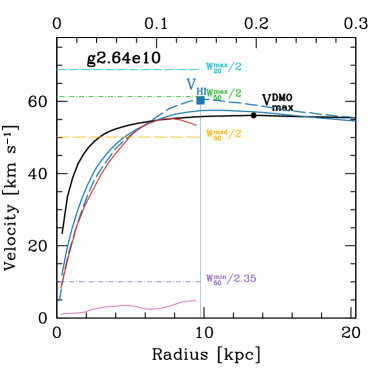
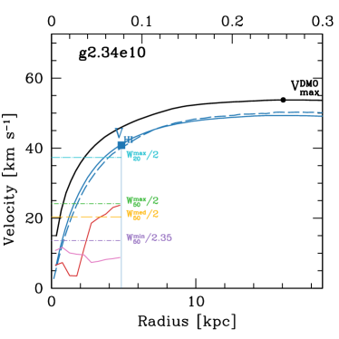
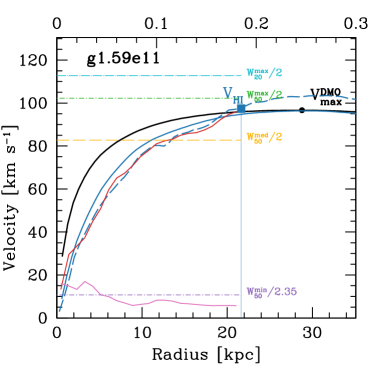
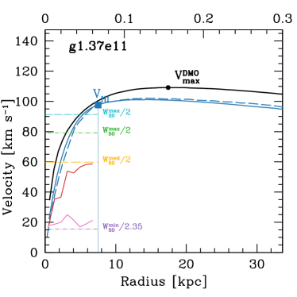
2 المحاكاة
نقدم هنا عرضاً موجزاً لمحاكاة NIHAO. ونحيل القارئ إلى Wang et al. (2015) لمناقشة أكمل. إن NIHAO عينة من 90 محاكاة هيدروديناميكية كونية من نوع التقريب المكبر تستخدم شفرة SPH gasoline2 (Wadsley et al., 2017).
اختيرت الهالات عند الانزياح الأحمر من محاكاة أم غير تبديدية بأحجام 60 و20 و& 15 Mpc، عرضت في Dutton & Macciò (2014)، وتعتمد كونية CDM مسطحة بمعاملات من Planck Collaboration et al. (2014): معامل هابل = 67.1 Mpc-1، وكثافة المادة ، وكثافة الطاقة المظلمة ، وكثافة الباريونات ، وتطبيع طيف القدرة ، وميل طيف القدرة . وتختار الهالات بانتظام في لوغاريتم كتلة الهالة من إلى من دون الرجوع إلى تاريخ اندماج الهالة أو تركيزها أو معامل دورانها. ويطبَّق تكوّن النجوم والتغذية الراجعة كما ورد في Stinson et al. (2006, 2013). وتختار الكتلة والتليين القسري بحيث يُحل ملف الكتلة عند نصف القطر الفيروسي، مما ينتج جسيمات مادة مظلمة داخل نصف القطر الفيروسي لجميع الهالات عند . والدافع وراء هذا الاختيار هو ضمان أن تحل المحاكاة ديناميكيات المجرة على مقياس أنصاف أقطار نصف الضوء، التي تكون عادة من نصف القطر الفيروسي (Kravtsov, 2013). ولجسيمات الهيدرو تليينات قسرية أصغر بعامل 2.34 من جسيمات المادة المظلمة، وتتراوح من في الهالات الأدنى كتلة إلى في الهالات الأعلى كتلة.
لكل محاكاة هيدروديناميكية محاكاة مقابلة تحتوي على المادة المظلمة فقط (DMO) وبالدقة نفسها. وقد بدأت هذه المحاكاة بالشروط الابتدائية نفسها، مع استبدال الجسيمات الباريونية بجسيمات مادة مظلمة. ونستبعد الهالات الأربع الأعلى كتلة (g1.12e12، g1.77e12، g1.92e12، g2.79e12)، لأنها كوّنت نجوماً كثيرة جداً، ولا سيما قرب مراكز المجرات، مما أدى إلى ملفات سرعة دائرية مركزية شديدة الذروة (Wang et al., 2015). وتتكون العينة النهائية المستخدمة في هذا العمل من 85 محاكاة.
حُددت الهالات في محاكاة NIHAO المكبرة باستخدام باحث الهالات الهجين MPI+OpenMP AHF11 1 http://popia.ft.uam.es/AMIGA (Gill et al., 2004; Knollmann & Knebe, 2009). ويحدد AHF فرط الكثافات المحلية في مجال كثافة مملس تكيفياً بوصفها مراكز هالات محتملة. وتعرَّف الكتل الفيروسية للهالات بأنها الكتل داخل كرة يكون متوسط كثافتها 200 مرة من كثافة المادة الحرجة الكونية، . ونرمز إلى الكتلة والحجم والسرعة الدائرية الفيروسية في المحاكاة الهيدروديناميكية بـ: . أما الخصائص المقابلة في محاكاة المادة المظلمة فقط فيرمز إليها برمز علوي، . وبالنسبة إلى الباريونات نحسب الكتل المحصورة داخل كرات نصف قطرها ، وهو ما يقابل إلى kpc. والكتلة النجمية داخل هي ، أما الهيدروجين المتعادل داخل فيحسب باتباع Rahmati et al. (2013) كما هو موصوف في Gutcke et al. (2017). ومن حيث المبدأ ينبغي تقسيم الهيدروجين المتعادل إضافياً إلى غاز ذري (Hi) وجزيئي (). أما عملياً فليس لذلك إلا أثر هامشي في عروض خطوط Hi المشتقة. وهذا متوقع لأنه في المجرات القزمة تكون النسبة بين الغاز الجزيئي والذري منخفضة جداً، في حين أن الغاز الذري والجزيئي في المجرات عالية الكتلة يتتبعان سرعة الدوران المسطحة نفسها، وإن كانا من غاز عند أنصاف أقطار مختلفة. وكخيار مرجعي نعد الغاز الذري غازاً متعادلاً بكثافة أقل من (وهي أيضاً عتبة تكوّن النجوم المستخدمة في محاكاتنا). ونقيس سرعات المجرات باستخدام عدد من التعريفات كما يناقش أدناه.
تمثل محاكاة NIHAO أكبر مجموعة من المحاكاة الكونية المكبرة التي تغطي مدى كتل الهالات من إلى . وتكمن فرادتها في الجمع بين الدقة المكانية العالية وعينة إحصائية من الهالات. وفي سياق LCDM، تكوّن هذه المحاكاة المقدار “الصحيح” من النجوم اليوم وفي أزمنة أسبق كذلك (Wang et al., 2015). كما أن كتل الغاز البارد وأحجامه فيها متسقة مع الأرصاد (Stinson et al., 2015; Macciò et al., 2016)، وهي تتبع علاقات تولي-فيشر للغاز والنجوم والباريونات (Dutton et al., 2017)، وتعيد إنتاج تنوع أشكال منحنيات دوران المجرات القزمة Santos-Santos et al. (2018). ومن ثم فهي تقدم قالباً جيداً لربط المرصودات المجرية (مثل عروض خطوط HI) بالخصائص الذاتية لهالة المادة المظلمة المضيفة (مثل السرعة الدائرية العظمى).
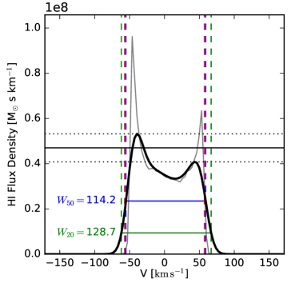
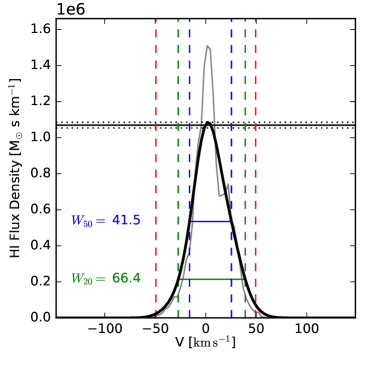
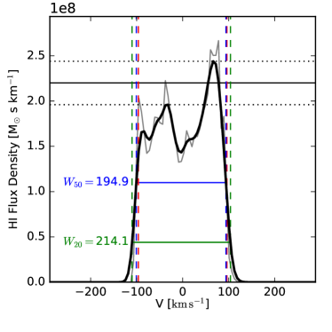
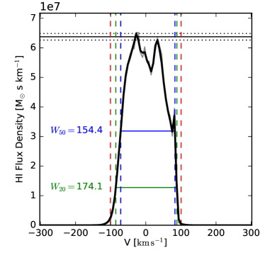
2.1 تعريفات السرعة
نستخدم في هذه الورقة عدداً من تعريفات السرعة. ونعرّفها بمساعدة بعض الأمثلة كما هو مبين في الشكل 1. وقد اختيرت هذه المجرات لتمثيل المجرات المدعومة بالدوران (اللوحات اليسرى) وتلك التي تحظى بدعم ضغط أكبر (اللوحات اليمنى).
-
•
– السرعة الدائرية العظمى لمحاكاة DMO. نبدأ بملف السرعة الدائرية الكروية لمحاكاة المادة المظلمة فقط (الخط الأسود المتصل)، وهو مكافئ لملف الكتلة التراكمي . وتظهر السرعة الدائرية الكروية العظمى بدائرة سوداء، وتقع عند 15% إلى 25% من نصف القطر الفيروسي، (مقياس المحور العلوي).
-
•
– السرعة الدائرية العظمى للمحاكاة الهيدروديناميكية. ننظر بعد ذلك في ملف السرعة الدائرية للمحاكاة الهيدروديناميكية (الخطوط الزرقاء). ويبين الخط المتصل السرعة الدائرية الكروية، في حين يبين الخط المتقطع تلك المشتقة من الجهد في مستوى القرص، . ونعرّف بأنه السرعة الدائرية الكروية للمحاكاة الهيدروديناميكية عند نصف القطر الذي تحدث عنده السرعة الدائرية العظمى لمحاكاة DMO. ونستخدم هذا التعريف لأنه يبين صراحة متى يحدث فقدان للكتلة من النظام ()، ومتى يحدث تبديد باريوني (). وفي هذه الأمثلة، يوجد فقدان للكتلة من المجرات في اللوحات اليمنى من الشكل 1، ولا يوجد تغير للمجرات في اللوحات اليسرى.
لاحظ أن السرعة الدائرية المعتمدة على الجهد أدنى من السرعة الدائرية الكروية عند أنصاف الأقطار الصغيرة، وأعلى منها عند أنصاف الأقطار الكبيرة. وهذه سمة معروفة جيداً للفروق بين توزيع كتلة مفلطح وآخر كروي (Binney & Tremaine, 1987)
Figure 3: العلاقة بين عروض خطوط Hi ، (يساراً)، و (يميناً) من المحاكاة الهيدروديناميكية والسرعة الدائرية العظمى من محاكاة المادة المظلمة فقط المقابلة. وتمثل النقاط 100 إسقاطاً عشوائياً لكل مجرة، بينما تبين الدائرة المفتوحة عرض الخط الوسيط. ويبين الخط المنقط علاقة واحد إلى واحد. أما الخط المتصل فيبين ملاءمة لكل البيانات، مع إظهار التشتت بالخطوط المتقطعة. -
•
- السرعة الدائرية عند نصف قطر HI. نعرّف نصف قطر HI، ، بأنه نصف القطر الذي يحصر 90% من كتلة HI (في الإسقاط وجهاً-على). وهذا يقارب حافة منحنى دوران HI المرصود، ويقع قرب نصف القطر الذي يبلغ عنده ملف كثافة سطح HI المسقط ، لكنه يمتاز بأنه خال من آثار الإسقاط وقابل للقياس في كل مجرة (تحتوي على HI). وتكون السرعة الدائرية المعتمدة على الجهد عند نصف قطر HI هي .
-
•
– ملفا الدوران والتشتت. نحسب منحنى الدوران (الخط الأحمر) وملف التشتت (الخط الوردي) على النحو الآتي. ندير المجرة إلى منظور وجه-على، مستخدمين الزخم الزاوي لجسيمات الغاز البارد () داخل 10% من نصف القطر الفيروسي. ثم نقسم المجرة إلى سلسلة من الحلقات متساوية العرض. وفي كل حلقة نحسب السرعة المتوسطة () وتشتت السرعة () في الاتجاه السمتاني (). لاحظ أن هذا التشتت يأخذ في الحسبان الحركات الكلية للغاز فقط. وفي المجرات في اللوحات اليسرى، تتتبع سرعة الدوران عن قرب السرعة الدائرية المعتمدة على الجهد، ويكون التشتت منخفضاً، . أما في المجرات في اللوحات اليمنى، فتقلل سرعة الدوران منهجياً من تقدير السرعة الدائرية، ويكون تشتت السرعة أعلى، .
-
•
- عروض خطوط HI. ننتقل الآن إلى عروض خطوط HI المقاسة عند 50% و20% من فيض الذروة (انظر الشكل 2 لأمثلة من مجراتنا المرجعية). وفي تحديث للحساب في Macciò et al. (2016) ندرج هنا الحركات الحرارية لغاز HI. تكون التغيرات طفيفة عند عروض الخطوط الكبيرة، غير أن درجة الحرارة تضيف، عند عروض الخطوط الصغيرة، حداً أدنى لعرض الخط مقداره ، الموافق لـ . ولكل جسيم غازي نمثل توزيع السرعة على خط البصر بتوزيع غاوسي متوسطه مناظر لسرعة الجسيم على خط البصر، وفيضه مناظر لكتلة HI في الجسيم، وتشتته محسوب من درجة حرارة الجسيم بافتراض . ونجمع الغاوسيات لإعطاء مدرج الفيض مقابل السرعة.
وكما هو شائع في الأرصاد، نعرّف فيض الذروة بأنه متوسط فيض الذروة على كل جناح سرعي (أي الموجب والسالب). انظر الشكل 2 للأمثلة. وتوضع علامات فيوض الذروة على كل جناح سرعي بخطوط أفقية منقطة. ويعرض متوسطها بخطوط أفقية متصلة. وبالتعريف . ولأن يتطلب نسبة إشارة إلى ضجيج أعلى، ومن ثم يمكن قياسه من عدد أقل من المجرات، فإن هو التعريف الأكثر استخداماً في مسوح HI الكبيرة، ولذلك سيكون تعريفنا الافتراضي.
نحسب عروض الخطوط من 100 إسقاطاً عشوائياً (مختارة بانتظام من سطح كرة وحدة)، ونقيس القيم العظمى والوسيطة والصغرى. وتقابل القيم العظمى عادة القيم المشتقة من منظور حافة-على للمجرة. وتظهر هذه القيم كخطوط أفقية سماوية () وخضراء () في الشكل 1. ويظهر وسيط بخط أفقي برتقالي. ويمكن استخدام أصغر عرض خط (الخطوط الأرجوانية الأفقية) لتقريب تشتت سرعة الغاز في النظام، لأن في التوزيع الغاوسي.
ولكل إسقاط نقيس فيه عرض خط نقيس أيضاً نسبة المحور الأصغر إلى الأكبر (b/a) لغاز HI باستخدام العزوم على النحو الآتي. فلكل جسيم غازي لدينا إحداثياته المسقطة، ، وبعده عن مركز المجرة ، وكتلة HI، . وباستخدام هذه الكميات نحسب العزوم الموزونة بكتلة HI:
| (1) | |||
| (2) | |||
| (3) |
ثم تعطى نسبة المحورين بـ
| (4) |
حيث إن و.
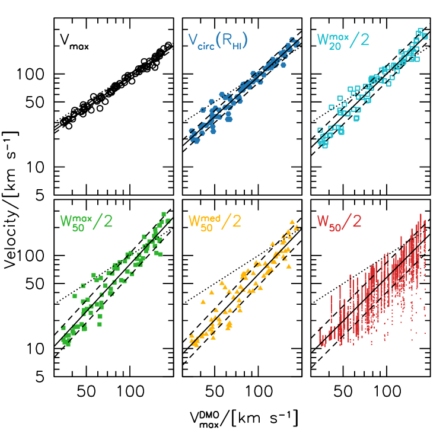
3 من السرعة الدائرية العظمى إلى عرض خط HI
يبين الشكل 3 العلاقات بين أنصاف عروض الخطوط و مع . وتشبه اللوحة اليسرى كثيراً الشكل 2 في Macciò et al. (2016)، غير أننا نستخدم هنا حساباً محدثاً لعرض الخط يضيف حداً أدنى لعرض الخط مقداره . وتقع المجرات منهجياً أسفل علاقة واحد إلى واحد (الخطوط المنقطة)، مما يدل على أن عرض خط Hi مؤشر متحيز لسرعة الهالة العظمى. وتعطى الملاءمات الخطية للعلاقات (باستخدام جميع نقاط البيانات) بـ
| (5) |
مع تشتت قدره ، و
| (6) |
مع تشتت قدره . وميل هذه الملاءمات أكبر من الواحد، مما يبين أن عروض الخطوط تكون مؤشراً أضعف لسرعة الهالة في الهالات الأدنى سرعة. وتبين التشتتات أن مؤشر أضعف لسرعة الهالة من .
| Sample | Fig. | ||||||
| NIHAO | 1.904 | 1.614 | 1.557 | 0.161 | 3 | ||
| NIHAO | 1.904 | 1.751 | 1.419 | 0.120 | 3 | ||
| NIHAO | 1.904 | 1.863 | 1.101 | 0.032 | 4 | ||
| NIHAO | 1.904 | 1.833 | 1.426 | 0.064 | 4 | ||
| NIHAO | 1.904 | 1.855 | 1.518 | 0.086 | 4 | ||
| NIHAO | 1.904 | 1.742 | 1.685 | 0.119 | 4 | ||
| NIHAO | 1.904 | 1.640 | 1.635 | 0.122 | 4 | ||
| SPARC | 9.493 | 1.109 | 0.281 | 0.18 | 15 | ||
| NIHAO | 8.325 | 0.779 | 0.303 | 0.24 | 15 | ||
| SPARC | 9.471 | 1.109 | 0.311 | 0.23 | 15 | ||
| NIHAO | 8.309 | 0.789 | 0.252 | 0.23 | 15 | ||
| SPARC | 9.471 | 0.123 | -0.137 | 0.19 | 16 | ||
| NIHAO | 8.394 | 0.286 | -0.098 | 0.14 | 16 | ||
| SPARC | 1.109 | 0.123 | -0.399 | 0.18 | 16 | ||
| NIHAO | 0.826 | 0.286 | -0.332 | 0.15 | 16 | ||
| NIHAO | 8.83 | 0.585 | -0.013 | 0.20 | 17 |
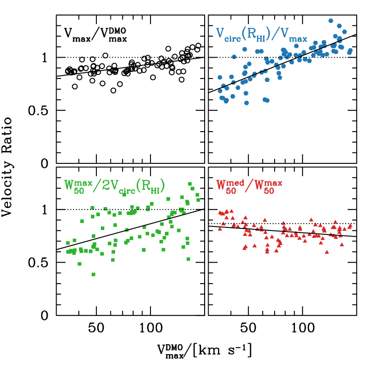
يبين الشكل 4 العلاقات بين تعريفات سرعة متعددة و. وترد الملاءمات الخطية (في فضاء ) في الجدول 1. لاحظ أن التطبيع والميل والتشتت تتغير منهجياً في كل خطوة. ولا تكون التغيرات كبيرة في أي من هذه الخطوات منفردة، لكنها تتراكم لتعطي علاقة بين عرض الخط وسرعة الهالة مختلفة جداً عن توافق واحد إلى واحد. وبالنسبة إلى المجرات في هالات بكتلة درب التبانة يكون متوسط نصف عرض الخط المسقط ، بحيث يكون عرض الخط، مع استثناء آثار الإسقاط المتوقعة، مؤشراً جيداً لسرعة الهالة العظمى. غير أن متوسط نصف عرض الخط في المجرات القزمة عند ، وقيمته ، أقل من سرعة الهالة بعامل مقداره 2.5.
هناك عدد من العمليات الفيزيائية التي تؤدي دوراً في تحويل السرعة الدائرية العظمى إلى عروض خطوط HI المسقطة: التدفقات الداخلة والخارجة؛ امتداد HI وشكل منحنى الدوران؛ الحركات غير الدائرية؛ والإسقاط. وهذه ترتبط، لكن ليس على نحو فريد، بأربع نسب نعرضها في الشكل 5.
3.1 التدفقات الداخلة والخارجة
تبين اللوحة العليا اليسرى ، التي تعتمد على صافي تدفق الباريونات إلى الداخل والخارج. وعند السرعات المنخفضة تكون النسبة ، مما يدل على صافي تدفقات خارجة، في حين تكون النسبة عند السرعات العالية أكبر من 1، مما يدل على صافي تدفق داخل. وللمرجعية، لو فقد نظام ما باريوناته أو لم يراكم أياً منها، لتوقعنا بسذاجة نسبة ، حيث إن كسر الباريونات الكوني . غير أن الانخفاض في سرعة الهالة أكبر من ذلك لأن فقدان الباريونات في الأزمنة المبكرة (نتيجة التغذية الراجعة النجمية) يخفض معدل تراكم المادة المظلمة، ومن ثم يخفض كتلة الهالة وسرعتها العظمى بحلول الانزياح الأحمر . وتظهر نتائج مماثلة في محاكاة هيدروديناميكية كونية أخرى، Sawala et al. (مثلاً، 2016)، ومن ثم يبدو أن الأثر غير مرتبط بتفاصيل نموذج ما دون الشبكة لتكوّن النجوم والتغذية الراجعة.
3.2 امتداد HI وشكل منحنى الدوران
تبين اللوحة العليا اليمنى نسبة مقابل . وفي جميع المجرات يقاس عند نصف قطر أصغر من ، لذلك تعتمد النسبة على شكل ملف السرعة الدائرية وامتداد غاز HI. وفي الهالات عالية السرعة تكون النسبة أكبر من 1 بسبب تدفق الباريونات إلى الداخل. أما في الهالات منخفضة الكتلة فتكون النسبة أصغر من 1 لأن HI لا يمتد إلى الجزء المسطح من ملف السرعة. وعند سرعة هالة قدرها 50 km/s يبلغ متوسط النسبة 0.8، لكن توجد بعض المجرات القزمة بنسبة تساوي الواحد وأخرى بنسبة 0.6. وهذا يشير بالفعل إلى تنوع امتداد HI و/أو أشكال منحنيات الدوران.
3.3 الحركات غير الدائرية
تبين اللوحة السفلى اليسرى نسبة . وعرض الخط هو التفاف منحنى الدوران مع توزيع HI. وفي المجرات المدعومة دورانياً ذات منحنى دوران مسطح تكون هذه النسبة قريبة من الواحد. وعندما تكون النسبة أقل من الواحد فإن ذلك يشير إلى منحنى دوران صاعد و/أو حركات غير دائرية مهمة. وقد تكون هذه تشتتاً في الغاز، لكنها تشمل أيضاً سمات غير محورية التناظر مثل القضبان والأذرع الحلزونية والالتواءات، وتدفقات غازية خارجة عن الاتزان بسبب، مثلاً، رياح مدفوعة بالمستعرات العظمى أو اندماجات. وعند سرعة هالة قدرها 50 km/s يبلغ متوسط النسبة 0.7، لكن يوجد مرة أخرى تشتت كبير، مع بعض المجرات القزمة التي لها نسبة قريبة من الواحد.
3.4 الإسقاط
تبين اللوحة السفلى اليمنى النسبة بين عرض خط الوسيط والأعظمي. وتخبرنا هذه النسبة عن آثار الإسقاط. فزاوية الميل، ، حيث تعني وجهاً-على و تعني حافة-على، موزعة بانتظام في من 0 إلى 1. وبالنسبة إلى قرص دوار رقيق ذي تشتت سرعة مهمل، يرتبط عرض الخط عند الميل، ، بعرض الخط عند الميل وفق . ومن ثم فإن النسبة بين عرض الخط الوسيط () والأعظمي () هي . ونرى في الشكل بضع مجرات عند جميع سرعات الهالات قرب هذه القيمة (الخط المنقط). غير أن غالبية المجرات تقع أسفل هذا الخط، مما يدل على أن المجرات عموماً ليست أقراصاً دوارة رقيقة. وهذا مظهر آخر لدور الحركات غير الدائرية. وعند سرعة هالة قدرها 50 يبلغ متوسط النسبة 0.8. وعند أدنى السرعات تكون النسبة قريبة من الواحد، مما يدل على أن هذه الأنظمة (أو على الأقل خطوط HI) لديها دعم دوراني ضئيل جداً.
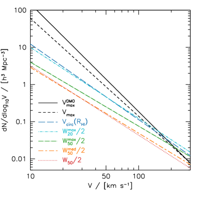
4 دوال السرعة المستنتجة
نناقش الآن كيف تؤدي تعريفات السرعة المختلفة إلى دوال سرعة ذات ميول مختلفة. نعرض أولاً نتائج بقوانين قوى، إذ تكون التحويلات بسيطة وتحليلية. ثم ننظر في أثر التشتت الغاوسي، وأخيراً التوزيع الفعلي لعروض الخطوط من محاكاتنا، الموافق لتوزيعات غير قوانين قوى وتشتت غير غاوسي.
4.1 اعتبارات تحليلية لدالة السرعة
بالنسبة إلى دالة سرعة تراكمية ذات شكل قانون قوة
| (7) |
تمتلك دالة السرعة التفاضلية الميل نفسه، ، لكن بتطبيع يختلف بمقدار الميل:
| (8) |
وإذا كانت سرعتان مختلفتان مرتبطتين بالعلاقة ، فإن دالة السرعة التراكمية تنتقل ببساطة:
| (9) |
وتتغير دالة السرعة التفاضلية بسبب ، وبما أن
| (10) |
فإن دالة السرعة التفاضلية الجديدة هي:
| (11) |
تُعطى دالة السرعة التفاضلية لـ في المادة المظلمة الباردة لكونية Planck (Planck Collaboration et al., 2014) بواسطة (Klypin et al., 2015):
| (12) |
وبذلك يمكننا استخدام المعادلات في الجدول 1 لتحويل ذلك إلى دوال السرعة لتعريفات السرعة المختلفة. ونفعل ذلك أولاً مع إهمال التشتت لإظهار مقدار الأثر، ثم سندرج التشتت لاحقاً. وتظهر النتيجة في الشكل 6، ويعطي الجدول 2 الميول والتطبيعات عند . وتنشأ معظم الفروق من أربعة تحويلات: ، ، و، و . ويبلغ الانتقال الكلي في التطبيع عاملاً مقداره 8.7. ونشدد على أن ذلك يعود بالكامل إلى تغير في السرعات، لا إلى أي تغير في الكثافات العددية للأجسام. ونلاحظ أن الأثر القوي لتعريف السرعة في ميل دالة السرعة قد عرض سابقاً بواسطة Brook & Shankar (2016) باستخدام مطابقة وفرة الهالات لربط الكتل الباريونية بكتل الهالات، ثم باستخدام علاقات تولي-فيشر الباريونية المختلفة لربط الكتل الباريونية بالسرعات.
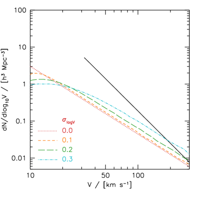
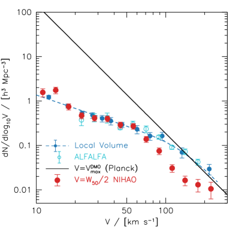
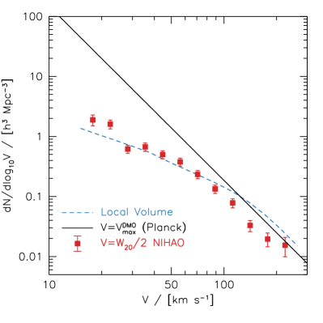
| definition | ||
|---|---|---|
| -2.90 | 1.38 | |
| -2.63 | 0.867 | |
| -2.03 | 0.464 | |
| -1.91 | 0.462 | |
| -1.72 | 0.249 | |
| -1.77 | 0.166 | |
| -1.80 | 0.158 |
4.2 أثر التشتت الغاوسي
يبين الشكل 7 أثر التشتت الغاوسي (في ) في دالة السرعة. ويبين الخط الأسود دالة السرعة باستخدام ، مع أخذ عينات بين سرعة 30 إلى 200 . ويبين الخط الأحمر المنقط دالة السرعة باستخدام . وتبين الخطوط الأخرى أثر التشتت اللوغاريتمي الطبيعي (0.1، 0.2، و0.3 dex) في العلاقة بين و. ويتمثل أثر التشتت في زيادة تطبيع دالة السرعة. فالمجرات تنتقل تفضيلياً إلى سرعة أعلى لأن عدد الهالات منخفضة السرعة أكبر بكثير من عدد الهالات عالية السرعة. ولا يكون الأثر الكلي كبيراً، إذ لا يتعدى تغيراً قدره 0.1 dex لتشتت مقداره 0.2 dex.
| error | error | |||
|---|---|---|---|---|
| 1.05 | 1.559 | 0.332 | – | – |
| 1.15 | 1.747 | 0.295 | – | – |
| 1.25 | 0.743 | 0.116 | 1.888 | 0.385 |
| 1.35 | 0.469 | 0.072 | 1.603 | 0.271 |
| 1.45 | 0.413 | 0.061 | 0.617 | 0.095 |
| 1.55 | 0.398 | 0.061 | 0.671 | 0.107 |
| 1.65 | 0.289 | 0.044 | 0.500 | 0.078 |
| 1.75 | 0.270 | 0.039 | 0.378 | 0.058 |
| 1.85 | 0.138 | 0.021 | 0.233 | 0.036 |
| 1.95 | 0.0747 | 0.0128 | 0.134 | 0.021 |
| 2.05 | 0.0308 | 0.0060 | 0.0781 | 0.0136 |
| 2.15 | 0.0163 | 0.0040 | 0.0330 | 0.0069 |
| 2.25 | 0.0130 | 0.0041 | 0.0195 | 0.0050 |
| 2.35 | 0.0105 | 0.0043 | 0.0154 | 0.0054 |
4.3 اشتقاق دالة السرعة من عرض الخط مقابل السرعة الدائرية العظمى
ننتقل الآن إلى مزيد من التفصيل ونبين كيف يمكن تحويل توزيع المجرات في مستوى مقابل إلى دالة السرعة. نقيم شبكة في و بعرضي و ، ونعد عدد المجرات في كل خلية، . ومن دالة سرعة DMO التراكمية نعرف مباشرة عدد هالات المادة المظلمة في صندوق معين ضمن حجم فضائي معين، . وبمقارنة العدد الفعلي لنقاط البيانات (عدد الهالات في كل صندوق مضروباً في عدد الإسقاطات لكل هالة) مع ، نحصل على الوزن لكل هالة في الصندوق :
| (13) |
ثم ننتقل إلى كل صندوق ونعد عدد المجرات باستخدام الأوزان:
| (14) |
ونعتمد كعروض صناديق مرجعية و. وتظهر دوال السرعة الناتجة لـ (يساراً) و (يميناً) كنقاط حمراء في الشكل 8، وتدرج في الجدول 3. وتحسب أشرطة الخطأ () وفق ، حيث إن هو عدد المحاكاة التي تسهم في كل صندوق . وعند السرعات المنخفضة () تمتلك دالة NIHAO تطبيعاً وميلًا ضحلاً يتفقان مع أرصاد الحجم المحلي (Klypin et al., 2015) وALFALFA (Papastergis & Shankar, 2016). وعند السرعات العالية () تقلل محاكاة NIHAO من تقدير الكثافات العددية المرصودة، أو بدلاً من ذلك تكون عروض الخطوط منخفضة جداً. ونعود إلى سبب محتمل لذلك في القسم 5.3 أدناه.
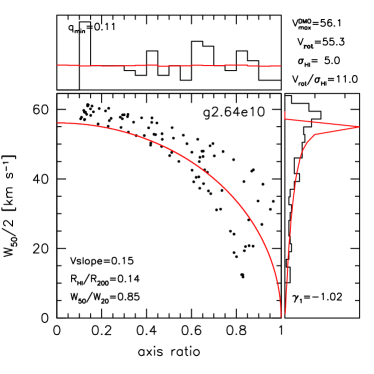
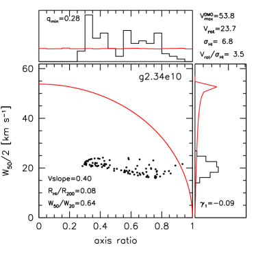
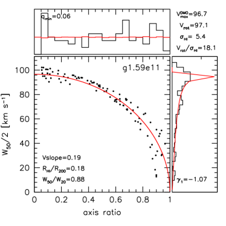
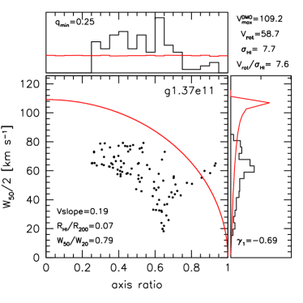
في محاكاتنا يعد متنبئاً أفضل بسرعة الهالة من (انظر الشكل 4)، ولذلك فهو تعريفنا المفضل للأرصاد المستقبلية. ولا تتوافر حالياً أرصاد لدالة ، لذا نزحزح الأرصاد باستخدام التقريب (Brook et al., 2016)، وبحد أدنى . وفي هذه الحالة تكون المحاكاة أقرب إلى دالة السرعة المرصودة عند السرعات العالية، مع المحافظة على الاتفاق عند السرعات المنخفضة.
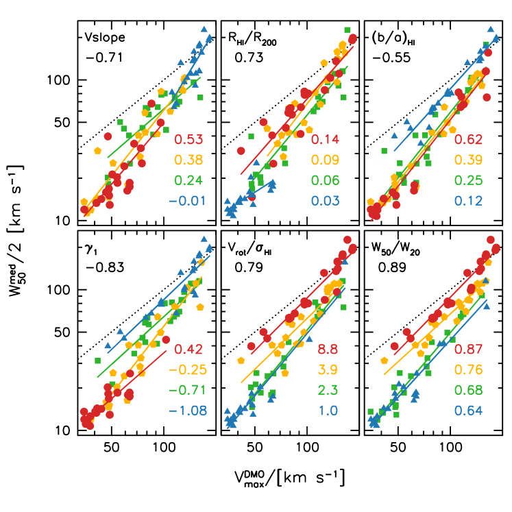
5 اختبار المحاكاة
لقد أظهرنا أن التباين عند السرعات المنخفضة بين دالة عروض خطوط HI المرصودة ودالة في LCDM يُحل بواسطة محاكاة NIHAO. ونناقش الآن بمزيد من التفصيل سبب حدوث ذلك، والطرائق الرصدية التي يمكن بها اختبار المحاكاة. ونركز نقاشنا على ستة معاملات (معظمها لا بعدي) مرتبطة بالتباين في عرض خط HI عند سرعة عظمى ثابتة لهالة المادة المظلمة.
-
•
نسبة الدوران إلى التشتت، . يحسب تشتت HI من أصغر عرض خط HI، . أما بالنسبة إلى سرعة الدوران فنستخدم القيمة العظمى لمنحنى الدوران، التي تميل إلى الحدوث قرب نصف قطر HI (انظر الشكل 1 للأمثلة). وهذا التعريف غير قابل للرصد مباشرة، لكن توجد تعريفات مماثلة.
-
•
، التواء توزيع ؛ انظر أدناه للتعريف. يمكن قياسه على عينات من المجرات.
-
•
شكل ملف خط HI، . قابل للرصد مباشرة.
-
•
ميل منحنى السرعة الدائرية الخارجي، . يقاس في محاكاتنا بين 0.5 و1.0 . ويمكن قياسه للمجرات الفردية.
-
•
نسبة نصف قطر HI إلى نصف القطر الفيروسي، . وهي لا بعدية، لكنها غير قابلة للرصد مباشرة. أما أحجام HI فهي قابلة للرصد.
-
•
سمك قرص HI. يحسب كأصغر نسبة محاور HI من جميع الإسقاطات. ويمكن قياسه من عينات المجرات.
5.1 اختبار الدعم الدوراني بواسطة آثار الإسقاط
تتمثل إحدى النتائج الرئيسية من محاكاتنا في أن المجرات، ولا سيما المجرات القزمة، لا تمتلك دائماً حركيات HI كما هو متوقع من أقراص رقيقة دوارة مثالية. وإحدى النتائج القابلة للاختبار رصدياً لذلك هي أثر الإسقاط.
بالنسبة إلى قرص رقيق متناظر محورياً ومدعوم بالدوران، تكون نسبة المحور الأصغر إلى الأكبر موزعة بانتظام بين 0 و1. وبصيغة ميل القرص، ، حيث إن وجهاً-على و حافة-على، فإن ، ومن ثم يتغير عرض الخط المرصود وفق . ويبين الشكل 9 عرض الخط مقابل نسبة المحورين لمجرات الاختبار الأربع. وتحسب نسبة المحورين لكل إسقاط باستخدام العزوم كما وصف في القسم 2. وتمتلك المجرات العليا سرعة هالة عظمى ، بينما تمتلك المجرتان السفليتان . والكتل النجمية المقابلة هي و، على التوالي.
تمتلك المجرتان في اللوحتين اليسريين من الشكل 9 توزيعات نسب محاور قريبة من المنتظمة (المدرجات العليا) وتوزيعات عروض خطوط شديدة الالتواء (المدرجات اليمنى)، وقريبة مما يتنبأ به للأقراص الرقيقة الدوارة عند السرعة العظمى لهالة المادة المظلمة (الخطوط الحمراء المتصلة). ومن جهة أخرى، تنحرف المجرتان في اللوحتين اليمنيين من الشكل 9 بقوة عن هذا التنبؤ، مع عروض خطوط متوسطة أدنى وتوزيع أكثر تناظراً لعروض الخطوط. كما أن توزيع نسب المحاور أكثر تركزاً مركزياً.
من المعاملات المرتبطة بدرجة دعم المجرة دورانياً التواء توزيع عروض الخطوط. ونعتمد هنا معامل بيرسون للعزم الثالث للالتواء، الذي يعرَّف بأنه
| (15) |
حيث إن هو العزم المركزي الثالث، و هو الانحراف المعياري، و هو المتوسط. وتوافق القيمة توزيعاً متناظراً، وتوافق ذيلاً نحو القيم المنخفضة، في حين توافق ذيلاً نحو القيم العالية. ولقرص رقيق دوار توزيع لعروض الخطوط ذو التواء سلبي قوي بقيمة .
تمتلك المجرات في اللوحات اليسرى من الشكل 9 و، أي إنها تتصرف كأقراص رقيقة دوارة. وعلى النقيض من ذلك، تمتلك المجرات في اللوحات اليمنى و ، ومن ثم فهي أنظمة أقل دعماً بالدوران. وتتفق هذه الاستدلالات مع نسب الدوران إلى التشتت الفعلية ().
وثمة معامل آخر مرتبط بالدعم الدوراني للمجرة هو أصغر نسبة محور أصغر إلى محور أكبر، (أي سمك القرص). فالمجرات في اللوحات اليسرى لها نسب محاور صغرى أصغر (مناظرة لأقراص حافة-على أرق): و مقارنة بـ و.
وتعتمد النسبة بين عرضي الخط أيضاً على الدعم الدوراني، وكذلك على شكل منحنى السرعة الدائرية وامتداد HI. وتمتلك المجرات في اللوحات اليسرى ملفات خطية أشد انحداراً وملفات سرعة دائرية خارجية أكثر امتداداً وأقل انحداراً.
5.2 ما الذي يجعل عروض الخطوط تقلل من تقدير السرعة الدائرية العظمى؟
يبين الشكل 10 أثر عدة معاملات (معظمها لا بعدي) في العلاقة بين عرض خط HI الوسيط والسرعة الدائرية العظمى لهالة المادة المظلمة. وترمز ألوان النقاط إلى المعامل المعني. وتدل الأعداد الأربعة في كل لوحة على متوسط قيمة كل ربيع، ويمثل الخط المتصل ملاءمة لكل ربيع من النقاط. ونناقش كل معامل بدوره أدناه.
-
•
ميل منحنى السرعة الدائرية الخارجي (أعلى اليسار). تشير القيمة الموجبة إلى أن المنحنى لا يزال صاعداً في الأجزاء الخارجية، في حين تشير القيمة القريبة من الصفر إلى منحنى سرعة مسطح. وتميل المجرات ذات ملفات السرعة الدائرية الأكثر صعوداً (النقاط الحمراء) إلى امتلاك نسب عرض خط إلى سرعة هالة أدنى.
-
•
نسبة نصف قطر HI إلى نصف القطر الفيروسي (أعلى الوسط). تمتلك المجرات الأصغر (المثلثات الزرقاء) عروض خطوط أدنى. ويعود ذلك جزئياً على الأقل إلى أنه إذا لم يبلغ HI الجزء المسطح من منحنى السرعة الدائرية، فستقلل الحركيات تدريجياً من تقدير السرعة الدائرية العظمى.
-
•
نسبة محوري HI (أعلى اليمين). تمتلك أنحف المجرات (النقاط الحمراء، ) عروض خطوط تتتبع سرعة الهالة، في حين تمتلك المجرات الأسمك عروض خطوط أدنى تدريجياً.
-
•
، التواء توزيع (أعلى اليسار). تمتلك المجرات ذات الالتواء السلبي القوي (النقاط الزرقاء) عروض خطوط تتتبع سرعة الهالة العظمى. وتؤدي القيم الأكبر من إلى عروض خطوط أدنى.
-
•
نسبة الدوران إلى التشتت (أسفل الوسط). تميل الأنظمة المدعومة دورانياً (الدوائر الحمراء) إلى امتلاك عروض خطوط تتتبع سرعة الهالة، في حين تميل الأنظمة المدعومة بالضغط (المثلثات الزرقاء) إلى امتلاك عروض خطوط منخفضة.
-
•
شكل ملف خط HI (أسفل اليسار). تمتلك ملفات الخطوط الأكثر انحداراً (النقاط الحمراء) عروض خطوط قريبة من سرعة الهالة، بينما تمتلك ملفات الخطوط الضحلة (المثلثات الزرقاء) عروض خطوط أدنى بكثير من سرعة الهالة. ويعتمد شكل الملف على مزيج من شكل منحنى الدوران وامتداده، ونسبة الدوران إلى التشتت.
يشير العدد في الزاوية العليا اليسرى إلى معامل الارتباط بين المعامل المحدد و. ويظهر شكل ملف الخط أقوى ارتباط ()، يليه عن قرب الالتواء ()، ونسبة دوران HI إلى تشتته (). وعند سرعة هالة معينة تظهر جميع المعاملات الستة ارتباطاً بعرض الخط. ولمعرفة أي هذه المعاملات هو الأرجح في تفسير الاتجاه مع كتلة الهالة، نعرض الاعتماد على سرعة الهالة في الشكل 11. وتعرض الخطوط المستقيمة والمتقطعة ملاءمة مع تشتت 1. ويعطي العدد معامل الارتباط. نرى اتجاهات واضحة لكن مع تشتت مهم أيضاً. ومن الناحية البنيوية نرى أن الهالات الأقل سرعة تمتلك ميولاً أشد في منحنى السرعة الدائرية الخارجي وأحجام HI أصغر نسبياً، وأقراص HI أسمك هامشياً. ومن الناحية الحركية، نرى أن الهالات الأقل سرعة تمتلك توزيعات عروض خطوط HI أقل التواءً سلبياً، ونسب دوران إلى تشتت أدنى، وملفات خطوط أضحل.
وباختصار نرى أن اعتماد على تقوده أساساً نتيجتان: درجة الدعم الدوراني، وشكل منحنى الدوران. فالمجرات في الهالات الأقل كتلة لها دعم دوراني أقل وHI أقل امتداداً. ونبين أدناه أرصاداً حالية تقدم دليلاً على هذين الأثرين.
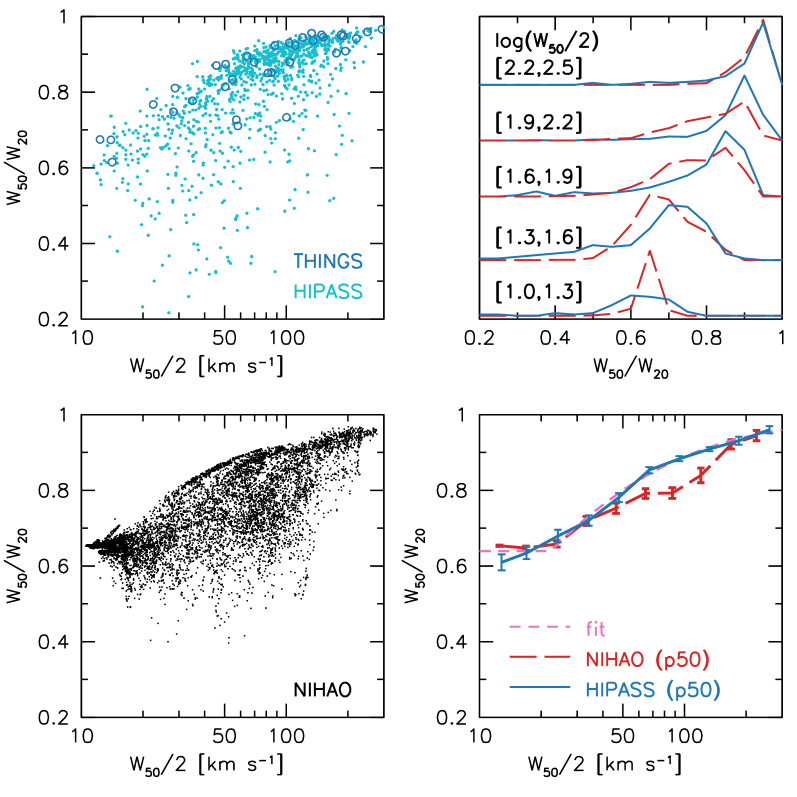
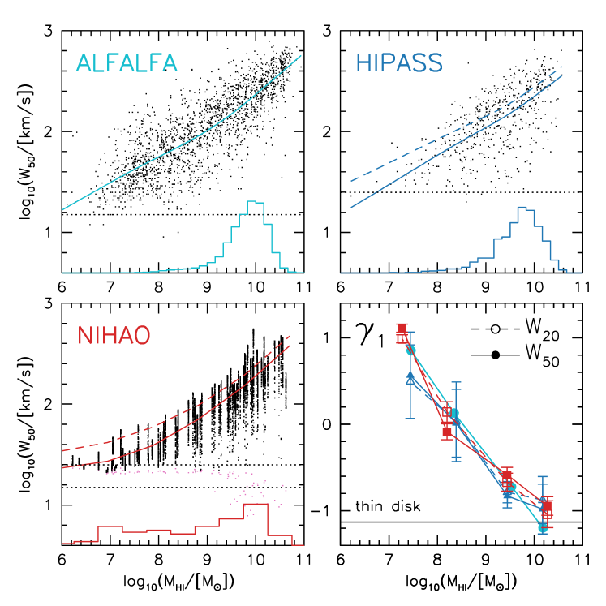
5.3 شكل ملف الخط
يعتمد شكل ملف خط HI على مقدار الدعم الدوراني وشكل منحنى الدوران. ومن الطرائق البسيطة لتوصيف ذلك النسبة بين عروض الخطوط المقاسة عند مستويي 50% و20% من فيض الذروة، و. وتكون النسبة قريبة من 1 لقرص دوار ذي منحنى دوران مسطح يكون تشتت سرعته صغيراً مقارنة بمركبة سرعة الدوران على خط البصر. وكلما أصبح ميل منحنى الدوران الخارجي أكثر إيجابية انخفضت النسبة، لأن كسراً أكبر من فيض HI يأتي من غاز يدور بسرعة أدنى من العظمى. كما أن دعم الضغط يخفض النسبة. وفي حد يكون ملف الخط ببساطة ناتجاً عن الحركات العشوائية للغاز، ومستقلاً عن شكل منحنى الدوران. وبالنسبة إلى توزيع غاوسي . وتكمن الميزة الرصدية لهذه النسبة في أنها لا تتطلب أرصاد HI محلولة مكانياً، وهو أمر غير ممكن حالياً لعينات كبيرة من المجرات.
عُرضت مقارنة بين محاكاة NIHAO والأرصاد سابقاً في (Macciò et al., 2016). وفي كل من الأرصاد والمحاكاة تنخفض للمجرات ذات عروض الخطوط الأدنى. وقد عُرضت هذه النتيجة أيضاً بواسطة (Brook et al., 2016) باستخدام عينة أصغر من المجرات من مشروع MaGICC (السابق لـ NIHAO)، وبواسطة El-Badry et al. (2018) باستخدام مجرات من مشروع FIRE.
يبين الشكل 12 العلاقة بين و من محاكاة NIHAO مقارنة بأرصاد HIPASS (Koribalski et al., 2004) وTHINGS (Walter et al., 2008). وفي كل من المحاكاة والأرصاد تتغير النسبة من عند السرعات العالية إلى عند السرعات المنخفضة، ويكون مقدار التشتت مشابهاً أيضاً. غير أنه عند النظر إلى علاقات الوسيط (اللوحة السفلى اليمنى)، تقلل محاكاة NIHAO من تقدير أرصاد HIPASS عند . وهذا هو المقياس نفسه الذي تقلل عنده المحاكاة من تقدير دالة السرعة المرصودة (الشكل 8). وتعرض اللوحة العليا اليمنى توزيعات في خمسة صناديق من . ويظهر ذلك مرة أخرى فائضاً من المجرات في NIHAO ذات نسب عروض خطوط منخفضة عند السرعات المتوسطة. ومن حيث المبدأ قد يكون ذلك بسبب وجود قدر مفرط من الحركات غير الدائرية و/أو لأن أقراص HI صغيرة جداً عند هذا المقياس السرعي. وبما أن محاكاة NIHAO تتفق جيداً مع أرصاد أحجام HI (انظر أدناه)، فنحن نرى أن نسبة عرض الخط المنخفضة يُرجح أن تكون بسبب فائض في الحركات غير الدائرية، غالباً مدفوع بالتغذية الراجعة. وبسبب التباين الذاتي الكبير في وصغر حجم العينة نسبياً، قد يكون سبب مساهم آخر هو آثار أخذ العينات، أي إننا صادف أن حاكينا عدداً أكبر من المجرات ذات النسب الأدنى. ويظهر تباين مماثل في عند هذا المقياس السرعي في محاكاة FIRE (El-Badry et al., 2018)، ويرجح أن له أصلاً مشتركاً يشير إلى اضطراب مدفوع بالتغذية الراجعة.
وباختصار، فإن شكل ملف خط Hi اختبار قوي وبسيط في الوقت نفسه للمحاكاة، ومن ثم فهو يحفز مسوح Hi عمياء مستقبلية تحصل على بيانات عميقة بما يكفي لقياس كل من و بدقة.
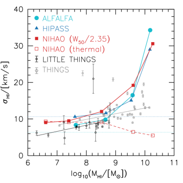
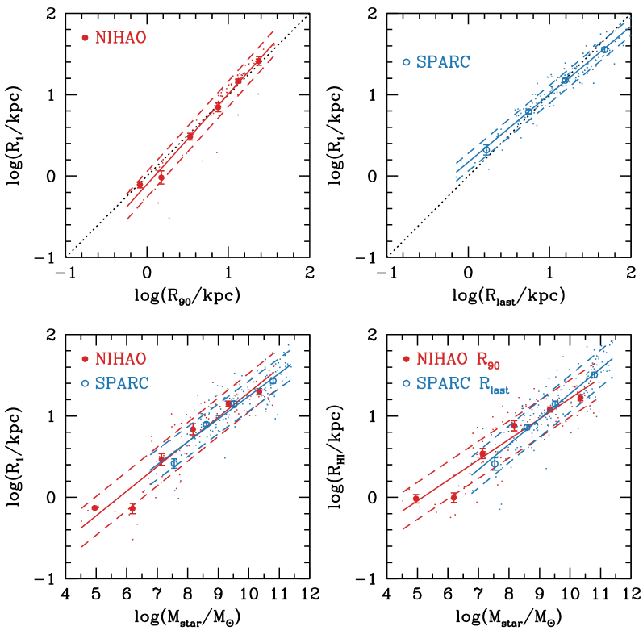
5.4 التواء توزيع عروض الخطوط
بالنسبة إلى المجرات المرصودة نحصل على إسقاط واحد فقط لكل مجرة. ومع ذلك، يمكننا بالنسبة إلى عينة من المجرات توقع توزيع عشوائي للإسقاطات، شريطة اختيار المجرات وفق معامل مستقل عن زاوية الإسقاط، مثل كتلة HI.
يبين الشكل 13 توزيعات عرض خط HI مقابل كتلة HI. وتأتي أرصاد الصحن الواحد من مسح ALFALFA (Haynes et al., 2018) وHIPASS (Koribalski et al., 2004). وتعرض اللوحة السفلى اليمنى اعتماد المقاس في صناديق كتلة HI. وتجد مجموعتا البيانات الرصدية والمحاكاة نتائج متسقة لالتواء كل من (الخطوط المتصلة) و (الخطوط المتقطعة). أي إن المجرات عالية الكتلة ذات التواء سلبي قوي، قريب من القيمة المتوقعة للأقراص الرقيقة الدوارة. أما المجرات الأدنى كتلة فلديها أعلى. وهذه علامة رصدية على أن المجرات الأدنى كتلة أكثر اضطراباً حركياً. وبالنسبة إلى المجرات الأدنى كتلة يكون توزيع عروض الخطوط ذا التواء موجب، وهو علامة على وجود حد أدنى في عرض الخط ناجم عن التوسيع الحراري لخط HI.
يمكن أيضاً استخدام توزيع عروض الخطوط في صناديق كتلة HI لتقدير تشتت سرعة غاز HI، . وذلك لأن قرص المجرة عندما يكون وجهاً-على لا تكون هناك مركبة دورانية مسقطة على خط البصر، ومن ثم يعكس عرض الخط المرصود الحركات المضطربة للغاز. وبافتراض أن ملفات الخطوط غاوسية، فإن . ويخضع أصغر عرض خط لأخطاء القياس الرصدية، وقد لا يكون ممثلاً للسكان، لذلك نأخذ متوسط أدنى 5% من عروض الخطوط. وسيعطي ذلك حداً أعلى لـ لأن أدنى 5% من الميول في قرص دوار رقيق تنتج دوراناً على خط البصر مقداره من قيمة حافة-على.
وتعرض نتائج هذه العملية كنقاط متصلة في الشكل 14. عموماً يوجد اتفاق جيد بين الأرصاد والمحاكاة. وفي التفاصيل توجد بعض الفروق. فعند مقارنة الأرصاد، تعطي HIPASS في صناديق الكتلة المنخفضة قيمة أعلى من ALFALFA، ويرجح أن ذلك بسبب الدقة الطيفية الأدنى لـ HIPASS (المشار إليها بالخطوط الأفقية). وباستثناء صندوق الكتلة الأعلى، تمتلك محاكاة NIHAO قيماً أعلى قليلاً لـ من ALFALFA. وبالنسبة إلى NIHAO تبين المربعات الحمراء المفتوحة تشتت السرعة الحراري. ومن ثم فإن الفرق بين النقاط الحمراء المتصلة والمفتوحة هو مساهمة الاضطراب (والدوران المسقط). وبما أن الإسقاط يؤثر في المحاكاة والأرصاد معاً، فإن التشتتات الأعلى قليلاً في NIHAO ناجمة عن الاضطراب، ويرجح أن ذلك نتيجة تغذية راجعة قوية جداً.
تبين النقاط السوداء والرمادية قياسات من مجرات منفردة باستخدام أرصاد Hi محلولة مكانياً من THINGS (Ianjamasimanana et al., 2012) وLITTLE THINGS (Iorio et al., 2017). وتبين الخطوط المتصلة ملاءمات خطية مع قص . الميول متشابهة، لكن يوجد إزاحة صغيرة قدرها ، يرجح أنها تعكس منهجية في تقنيات القياس. وفي مدى الكتل تتفق القياسات المحلولة جيداً مع القياسات المبنية على عروض الخطوط غير المحلولة مكانياً. ومن ثم يمكن في المستقبل استخدام تقنيتنا لاستنتاج تشتتات السرعة لعينات كبيرة من الأرصاد غير المحلولة مكانياً. وعند الكتل الأعلى () تعطي القياسات المحلولة تشتتات أقل من القياسات غير المحلولة. وكما ذكر أعلاه، من المرجح أن يساهم الدوران المسقط في هذا الفرق. وإضافة إلى ذلك، يتضمن التشتت المبني على عرض الخط انحرافات عن قرص متناظر محورياً تماماً. فعلى سبيل المثال، سيمنع الالتواء أن يكون الدوران المسقط صفراً عند أي زاوية رؤية، مما يزيد التشتت المستنتج. وثمة أثر مساهم محتمل آخر هو دور انتقاء العينة. فمسح THINGS ليس عينة كاملة من المجرات، وربما يكون منحازاً نحو المجرات الأكثر هيمنة بالدوران عند هذه الكتل مقارنة بسكان المجرات.
وباختصار، يبين توزيع عروض الخطوط في صناديق كتلة Hi أنه في المحاكاة والأرصاد كليهما تكون المجرات الأدنى كتلة أقل دعماً بالدوران من المجرات الأكبر كتلة. ويقود ذلك انخفاض في سرعة الدوران في المجرات منخفضة الكتلة، لا زيادة في تشتت الغاز، الذي ينخفض أيضاً في المجرات الأدنى كتلة.
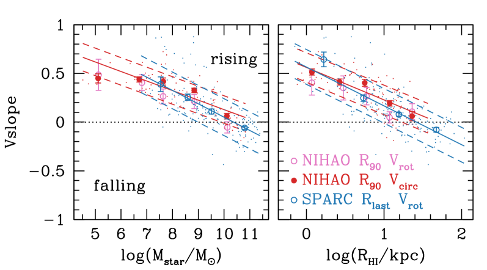
5.5 أحجام HI
أظهرنا سابقاً في Macciò et al. (2016) أن مجرات NIHAO تطابق علاقتين بين حجم HI وكتلة HI (طول المقياس الأسي، ونصف القطر الذي تبلغ عنده كثافة السطح ). ونحن مهتمون بالعلاقة بين حجم HI وكتلة الهالة، لكن كتل الهالات غير قابلة للرصد مباشرة. وفي محاكاة NIHAO، تكون الكتلة النجمية هي المرصود المجري الأكثر ارتباطاً بكتلة الهالة (معامل ارتباط 0.98). والتشتت في علاقة الكتلة النجمية بكتلة الهالة صغير ( dex) نظرياً (Dutton et al., 2017; Matthee et al., 2017) ورصدياً (More et al., 2011; Reddick et al., 2013; Moster et al., 2018). وهنا نستخدم مجرات من مسح SPARC (Lelli et al., 2016) لأنه أكبر تجميع لمنحنيات دوران HI المحلولة مع تصوير Spitzer عند (وهو يعطي أكثر متتبع موثوق للكتلة النجمية).
يبين الشكل 15 علاقات حجم HI بالكتلة النجمية ومقارنة بين تعريفات متعددة لحجم HI. وتبين اللوحات العليا أن (نصف القطر الذي تنخفض عنده كثافة سطح HI إلى ) مرتبط ارتباطاً وثيقاً بـ في محاكاة NIHAO و في أرصاد SPARC. وتعرض اللوحة السفلى اليسرى اتفاقاً جيداً جداً بين علاقات مقابل الكتلة النجمية في NIHAO (أحمر) وSPARC (أزرق). وترد ملاءمات علاقات الحجم-الكتلة في الجدول 1.
مع أن الأرصاد ليست عينة كاملة من المجرات القريبة، فإن المقارنة نقطة بداية جيدة. وهي تناقض ادعاء (Trujillo-Gomez et al., 2018) بأن توزيع HI في مجرات NIHAO مضغوط جداً مقارنة بالأرصاد. وقد اقترح (Trujillo-Gomez et al., 2018) ذلك سبباً لانخفاض نسبة في مجرات NIHAO القزمة. وكما يبين (الشكل 11)، فإن HI في مجرات NIHAO القزمة أقل امتداداً نسبة إلى هالة المادة المظلمة منه في المجرات الأعلى كتلة. ولذلك يسهم هذا في انخفاض نسب في الأقزام. غير أنه بدلاً من أن يكون أثراً مصطنعاً في NIHAO، يبدو أنه سمة للمجرات الحقيقية.
5.6 ميول منحنيات دوران HI الخارجية
يبين الشكل 16 الميل اللوغاريتمي () لمنحنى الدوران الخارجي مقابل الكتلة النجمية (يساراً) ونصف قطر HI (يميناً). وتعرض النقاط مجرات منفردة، في حين تعرض الرموز ذات أشرطة الخطأ المتوسط والخطأ في المتوسط ضمن صناديق الكتلة أو نصف القطر. وبالنسبة إلى الأرصاد يقاس الميل بين 0.5 و1.0 على منحنى الدوران، أما في المحاكاة فيقاس الميل المرجعي بين 0.5 و1.0 على منحنى السرعة الدائرية (دوائر حمراء ممتلئة)، وعلى منحنى الدوران (دوائر وردية مفتوحة).
تتفق المحاكاة جيداً مع الأرصاد، باستثناء أن العلاقات المرصودة لها تشتت أكبر قليلاً، ويرجح أن ذلك بسبب أخطاء قياس أكبر. ونرى أن المجرات عالية الكتلة أو الكبيرة تمتلك، في المتوسط، منحنيات دوران خارجية مسطحة عند نصف قطر HI. وكلما انتقلنا إلى كتل نجمية أدنى وأحجام أصغر أصبحت منحنيات الدوران الخارجية صاعدة تدريجياً. لاحظ أنه على الرغم من أن الأرصاد والمحاكاة كليهما تتضمنان ملفات كثافة مادة مظلمة ذات لب في المجرات القزمة، فإن الميل النموذجي لمنحنى الدوران الخارجي عند أنصاف الأقطار الكبيرة هو ، الموافق لملف كثافة . وعندما يكون منحنى الدوران صاعداً، فإن نصف عرض الخط سيقلل بالضرورة من تقدير سرعة الدوران العظمى.
5.7 نسب المحاور
يبين الشكل 17 العلاقات بين نسبة المحورين المسقطة وكتلة HI. وتعرض لكل مجرة 100 إسقاطات. وللوضوح، أزحنا كتل HI عشوائياً بمقدار صغير لكل إسقاط. ويوجد اتجاه ضعيف، مشابه لذلك بين أصغر نسبة محاور وسرعة الهالة المعروض في الشكل 11، مع تشتت قدره 0.20. ويبلغ متوسط نسبة المحورين المسقطة نحو 0.6، مقارنة بـ 0.5 لقرص رقيق مثالي. وأوضح تنبؤ قابل للاختبار هو أن أصغر نسبة محاور أكبر في المجرات الأدنى كتلة. ويمكن أن تمتلك المجرات الأعلى كتلة أقراصاً رقيقة حتى 0.05. وتحت كتلة ترتفع أصغر نسبة محاور بثبات لتبلغ 0.4 عند . ويعطى الغلاف الأدنى (الخط المنقط في الشكل 17) بـ
| (16) |
لـ ، و بخلاف ذلك.
تبين الدوائر السماوية مجرات مرصودة من الكون القريب من Wang et al. (2016). وتجمع هذه الدراسة بيانات Hi من عدة مشاريع مختلفة، ومن ثم فهي ممثلة لتشكيلة واسعة من أنواع المجرات وبيئاتها: Atlas3D (Serra et al., 2012, 2014)، وBluedisk (Wang et al., 2013)، وFaint Irregular Galaxies GMRT Survey (FIGGS) (Begum et al., 2008). وLITTLE THINGS (Hunter et al., 2012)، وLocal Volume HI Survey (LVHIS) (Koribalski et al., 2018)، والمجرات القزمة ذات الانفجار النجمي (Lelli et al., 2014)، وThe HI Nearby Galaxy Survey (THINGS) (Walter et al., 2008)، وعنقود Ursa Major (Verheijen & Sancisi, 2001)، وVoid Galaxy Survey (VGS) (Kreckel et al., 2012)، وVLA Imaging of Virgo Spirals in Atomic Gas (VIVA) (Chung et al., 2009)، وWesterbork HI survey of spiral and irregular galaxies (WHISP) (Swaters et al., 2002; Noordermeer et al., 2005).
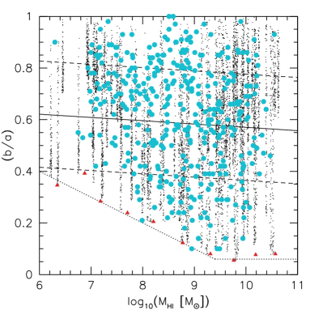
بالنسبة إلى الغالبية العظمى من المجرات (88%) تحدد نسبة المحورين بواسطة Wang et al. (2016) من خرائط Hi ، اعتماداً على العزوم من الرتبة الثانية لتوزيعات البكسلات حيث . أما بالنسبة إلى المجرات في VIVA (36) وAtlas3D (8)، فتؤخذ نسب المحاور من ملاءمات الحلقات المائلة لحقول السرعة. وقد استُبعدت المجرات ضعيفة الحل (نصف قطر HI أصغر من المحور الأكبر للحزمة)، مع أن ذلك لا يضمن أن نسب المحاور محلولة جيداً في كل المجرات.
للأرصاد والمحاكاة توزيعات نسب محاور متشابهة؛ ولا سيما أنه لا توجد مجرات مرصودة في الزاوية السفلى اليسرى حيث تتنبأ محاكاتنا بعدم وجودها. ويبدو أن هذا يؤكد غياب المجرات القزمة ذات أقراص HI الرقيقة. وتدعو الحاجة إلى أرصاد مستقبلية لعينة كاملة من المجرات بدقة مكانية أعلى لتأكيد غياب المجرات القزمة الرقيقة على نحو حاسم.
6 الملخص
نستخدم عينة من 85 مجرة محاكاة في كونية LCDM من مشروع NIHAO لدراسة سبب أن عروض خطوط HI تقلل منهجياً من تقدير السرعات الدائرية العظمى لهالات المادة المظلمة في المجرات القزمة (الشكل 3). ونرد ذلك إلى أثرين رئيسيين.
-
•
المجرات الأدنى كتلة أقل دعماً بالدوران. ويؤكد ذلك رصدياً التواء عروض الخطوط في صناديق كتلة HI في أرصاد ALFALFA وHIPASS كليهما (الشكل 13).
-
•
توزيعات HI أقل امتداداً (نسبة إلى هالة المادة المظلمة) في المجرات القزمة، بحيث تكون منحنيات الدوران لا تزال صاعدة عند آخر نقطة بيانات مقيسة، بما يتفق مع الأرصاد (الشكل 16).
يتناقص معامل شكل ملف HI الموصوف بـ في المجرات الأدنى كتلة (الشكل 12)، بما يتسق مع هذين الأثرين. وثمة اختبار رصدي إضافي يكمن في توزيع نسب محاور HI. وعلى وجه الخصوص، في محاكاة NIHAO تكون أصغر نسبة محاور أكبر في المجرات الأدنى كتلة (الشكل 17).
في محاكاتنا، تمثل حركيات HI جماعة غير متجانسة. فهناك مدى كبير من الدعم الدوراني وامتداد HI عند أي كتلة هالة أو مجرة معينة. ويدفع هذا التباين التباين في (الشكل 10). وتوجد أقراص HI رقيقة وممتدة ودوارة في محاكاتنا عند جميع كتل الهالات، لكنها ليست عينة عادلة. وهذا يعني أنه لا يمكن استخدام عينة من الأقراص الدوارة المنتظمة جيداً لتفسير عروض خطوط HI في عينات كبيرة غير متحيزة من المجرات، كما يحدث أحياناً (مثلاً، Papastergis & Ponomareva, 2017; Trujillo-Gomez et al., 2018).
تمتلك دالة سرعة عروض الخطوط المستنتجة من محاكاة NIHAO ميلاً ضحلاً () عند السرعات المنخفضة ()، بما يتسق مع الأرصاد (الشكل 8). ولذلك نستنتج أن التباين الظاهري بين تنبؤات نموذج LCDM الكوني والأرصاد، كما أبرز مؤلفون سابقون (Papastergis et al., 2011; Klypin et al., 2015)، يعود إلى افتراضهم غير الصحيح أن .
الشكر والتقدير
نشكر الحكم المجهول على تقرير مفصل وبنّاء. أُنجز هذا البحث على موارد الحوسبة عالية الأداء في جامعة نيويورك أبوظبي؛ وعلى عنقود theo في Max-Planck-Institut für Astronomie، وعلى عناقيد hydra في مركز الحوسبة في Garching. يعرب المؤلفون عن امتنانهم لـ Gauss Centre for Supercomputing e.V. (www.gauss-centre.eu) على تمويل هذا المشروع من خلال توفير زمن حوسبة على الحاسوب الفائق GCS Supercomputer SuperMUC في Leibniz Supercomputing Centre (www.lrz.de). يتلقى AO تمويلاً من Deutsche Forschungsgemeinschaft (DFG, German Research Foundation) – MO 2979/1-1.
References
- Begum et al. (2008) Begum, A., Chengalur, J. N., Karachentsev, I. D., Sharina, M. E., & Kaisin, S. S. 2008, MNRAS, 386, 1667
- Benson et al. (2002) Benson, A. J., Frenk, C. S., Lacey, C. G., Baugh, C. M., & Cole, S. 2002, MNRAS, 333, 177
- Binney & Tremaine (1987) Binney, J., & Tremaine, S. 1987, Princeton, NJ, Princeton University Press, 1987, 747 p.,
- Brook & Di Cintio (2015) Brook, C. B., & Di Cintio, A. 2015, MNRAS, 453, 2133
- Brook & Shankar (2016) Brook, C. B., & Shankar, F. 2016, MNRAS, 455, 3841
- Brook et al. (2016) Brook, C. B., Santos-Santos, I., & Stinson, G. 2016, MNRAS, 459, 638
- Brooks et al. (2017) Brooks, A. M., Papastergis, E., Christensen, C. R., et al. 2017, ApJ, 850, 97
- Buck et al. (2018) Buck, T., Macciò, A. V., Dutton, A. A., Obreja, A., & Frings, J. 2018, MNRAS in press, arXiv:1804.04667
- Bullock et al. (2000) Bullock, J. S., Kravtsov, A. V., & Weinberg, D. H. 2000, ApJ, 539, 517
- Courteau (1997) Courteau, S. 1997, AJ, 114, 2402
- Chung et al. (2009) Chung, A., van Gorkom, J. H., Kenney, J. D. P., Crowl, H., & Vollmer, B. 2009, AJ, 138, 1741
- Ceverino et al. (2017) Ceverino, D., Primack, J., Dekel, A., & Kassin, S. A. 2017, MNRAS, 467, 2664
- Dutton & Macciò (2014) Dutton, A. A., & Macciò, A. V. 2014, MNRAS, 441, 3359
- Dutton et al. (2017) Dutton, A. A., Obreja, A., Wang, L., et al. 2017, MNRAS, 467, 4937
- El-Badry et al. (2018) El-Badry, K., Quataert, E., Wetzel, A., et al. 2018a, MNRAS, 473, 1930
- El-Badry et al. (2018) El-Badry, K., Bradford, J., Quataert, E., et al. 2018b, MNRAS, 477, 1536
- Gill et al. (2004) Gill, S. P. D., Knebe, A., & Gibson, B. K. 2004, MNRAS, 351, 399
- Gutcke et al. (2017) Gutcke, T. A., Stinson, G. S., Macciò, A. V., Wang, L., & Dutton, A. A. 2017, MNRAS, 464, 2796
- Haynes et al. (2018) Haynes, M. P., Giovanelli, R., Kent, B. R., et al. 2018, ApJ, 861, 49
- Hunter et al. (2012) Hunter, D. A., Ficut-Vicas, D., Ashley, T., et al. 2012, AJ, 144, 134
- Ianjamasimanana et al. (2012) Ianjamasimanana, R., de Blok, W. J. G., Walter, F., & Heald, G. H. 2012, AJ, 144, 96
- Iorio et al. (2017) Iorio, G., Fraternali, F., Nipoti, C., et al. 2017, MNRAS, 466, 4159
- Jarosik et al. (2011) Jarosik, N., Bennett, C. L., Dunkley, J., et al. 2011, ApJS, 192, 14
- Johnston et al. (2008) Johnston, S., Taylor, R., Bailes, M., et al. 2008, Experimental Astronomy, 22, 151
- Kassin et al. (2012) Kassin, S. A., Weiner, B. J., Faber, S. M., et al. 2012, ApJ, 758, 106
- Knollmann & Knebe (2009) Knollmann, S. R., & Knebe, A. 2009, ApJS, 182, 608
- Koribalski et al. (2004) Koribalski, B. S., Staveley-Smith, L., Kilborn, V. A., et al. 2004, AJ, 128, 16
- Koribalski et al. (2018) Koribalski, B. S., Wang, J., Kamphuis, P., et al. 2018, MNRAS,
- Klypin et al. (1999) Klypin, A., Kravtsov, A. V., Valenzuela, O., & Prada, F. 1999, ApJ, 522, 82
- Klypin et al. (2015) Klypin, A., Karachentsev, I., Makarov, D., & Nasonova, O. 2015, MNRAS, 454, 1798
- Kravtsov et al. (2004) Kravtsov, A. V., Gnedin, O. Y., & Klypin, A. A. 2004, ApJ, 609, 482
- Kravtsov (2013) Kravtsov, A. V. 2013, ApJ, 764, L31
- Kreckel et al. (2012) Kreckel, K., Platen, E., Aragón-Calvo, M. A., et al. 2012, AJ, 144, 16
- Lelli et al. (2014) Lelli, F., Verheijen, M., & Fraternali, F. 2014, A&A, 566, A71
- Lelli et al. (2016) Lelli, F., McGaugh, S. S., & Schombert, J. M. 2016, AJ, 152, 157
- Macciò et al. (2010) Macciò, A. V., Kang, X., Fontanot, F., et al. 2010, MNRAS, 402, 1995
- Macciò et al. (2016) Macciò, A. V., Udrescu, S. M., Dutton, A. A., et al. 2016, MNRAS, 463, L69
- Matthee et al. (2017) Matthee, J., Schaye, J., Crain, R. A., et al. 2017, MNRAS, 465, 2381
- Moore et al. (1999) Moore, B., Ghigna, S., Governato, F., et al. 1999, ApJ, 524, L19
- More et al. (2011) More, S., van den Bosch, F. C., Cacciato, M., et al. 2011, MNRAS, 410, 210
- Moster et al. (2018) Moster, B. P., Naab, T., & White, S. D. M. 2018, MNRAS, 477, 1822
- Newman et al. (2013) Newman, S. F., Genzel, R., Förster Schreiber, N. M., et al. 2013, ApJ, 767, 104
- Noordermeer et al. (2005) Noordermeer, E., van der Hulst, J. M., Sancisi, R., Swaters, R. A., & van Albada, T. S. 2005, A&A, 442, 137
- Obreschkow et al. (2013) Obreschkow, D., Ma, X., Meyer, M., et al. 2013, ApJ, 766, 137
- Papastergis et al. (2011) Papastergis, E., Martin, A. M., Giovanelli, R., & Haynes, M. P. 2011, ApJ, 739, 38
- Papastergis & Shankar (2016) Papastergis, E., & Shankar, F. 2016, A&A, 591, A58
- Papastergis & Ponomareva (2017) Papastergis, E., & Ponomareva, A. A. 2017, A&A, 601, A1
- Planck Collaboration et al. (2014) Planck Collaboration, Ade, P. A. R., Aghanim, N., et al. 2014, A&A, 571, A16
- Rahmati et al. (2013) Rahmati, A., Schaye, J., Pawlik, A. H., & Raičevi, M. 2013, MNRAS, 431, 2261
- Reddick et al. (2013) Reddick, R. M., Wechsler, R. H., Tinker, J. L., & Behroozi, P. S. 2013, ApJ, 771, 30
- Santos-Santos et al. (2018) Santos-Santos, I. M., Di Cintio, A., Brook, C. B., et al. 2018, MNRAS, 473, 4392
- Sawala et al. (2016) Sawala, T., Frenk, C. S., Fattahi, A., et al. 2016, MNRAS, 457, 1931
- Schneider et al. (2014) Schneider, A., Anderhalden, D., Macciò, A. V., & Diemand, J. 2014, MNRAS, 441, L6
- Schneider & Trujillo-Gomez (2018) Schneider, A., & Trujillo-Gomez, S. 2018, MNRAS, 475, 4809
- Serra et al. (2012) Serra, P., Oosterloo, T., Morganti, R., et al. 2012, MNRAS, 422, 1835
- Serra et al. (2014) Serra, P., Oser, L., Krajnović, D., et al. 2014, MNRAS, 444, 3388
- Springel et al. (2005) Springel, V., White, S. D. M., Jenkins, A., et al. 2005, Nature, 435, 629
- Stinson et al. (2006) Stinson, G., Seth, A., Katz, N., et al. 2006, MNRAS, 373, 1074
- Stinson et al. (2013) Stinson, G. S., Brook, C., Macciò, A. V., et al. 2013, MNRAS, 428, 129
- Stinson et al. (2015) Stinson, G. S., Dutton, A. A., Wang, L., et al. 2015, MNRAS, 454, 1105
- Swaters et al. (2002) Swaters, R. A., van Albada, T. S., van der Hulst, J. M., & Sancisi, R. 2002, A&A, 390, 829
- Trujillo-Gomez et al. (2011) Trujillo-Gomez, S., Klypin, A., Primack, J., & Romanowsky, A. J. 2011, ApJ, 742, 16
- Trujillo-Gomez et al. (2018) Trujillo-Gomez, S., Schneider, A., Papastergis, E., Reed, D. S., & Lake, G. 2018, MNRAS, 475, 4825
- Verbeke et al. (2017) Verbeke, R., Papastergis, E., Ponomareva, A. A., Rathi, S., & De Rijcke, S. 2017, A&A, 607, A13
- Verheijen & Sancisi (2001) Verheijen, M. A. W., & Sancisi, R. 2001, A&A, 370, 765
- Verheijen et al. (2008) Verheijen, M. A. W., Oosterloo, T. A., van Cappellen, W. A., et al. 2008, The Evolution of Galaxies Through the Neutral Hydrogen Window, 1035, 265
- Walter et al. (2008) Walter, F., Brinks, E., de Blok, W. J. G., et al. 2008, AJ, 136, 2563
- Wang et al. (2013) Wang, J., Kauffmann, G., Józsa, G. I. G., et al. 2013, MNRAS, 433, 270
- Wang et al. (2015) Wang, L., Dutton, A. A., Stinson, G. S., et al. 2015, MNRAS, 454, 83
- Wang et al. (2016) Wang, J., Koribalski, B. S., Serra, P., et al. 2016, MNRAS, 460, 2143
- Wadsley et al. (2017) Wadsley, J. W., Keller, B. W., & Quinn, T. R. 2017, MNRAS, 471, 2357
- Wisnioski et al. (2015) Wisnioski, E., Förster Schreiber, N. M., Wuyts, S., et al. 2015, ApJ, 799, 209
- Zavala et al. (2009) Zavala, J., Jing, Y. P., Faltenbacher, A., et al. 2009, ApJ, 700, 1779
- Zwaan et al. (2010) Zwaan, M. A., Meyer, M. J., & Staveley-Smith, L. 2010, MNRAS, 403, 1969